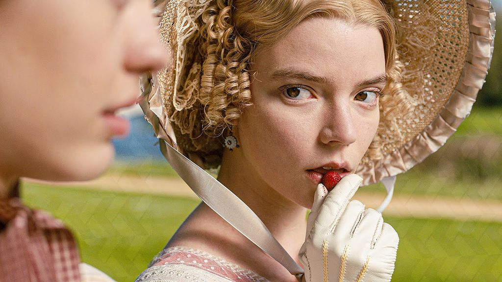
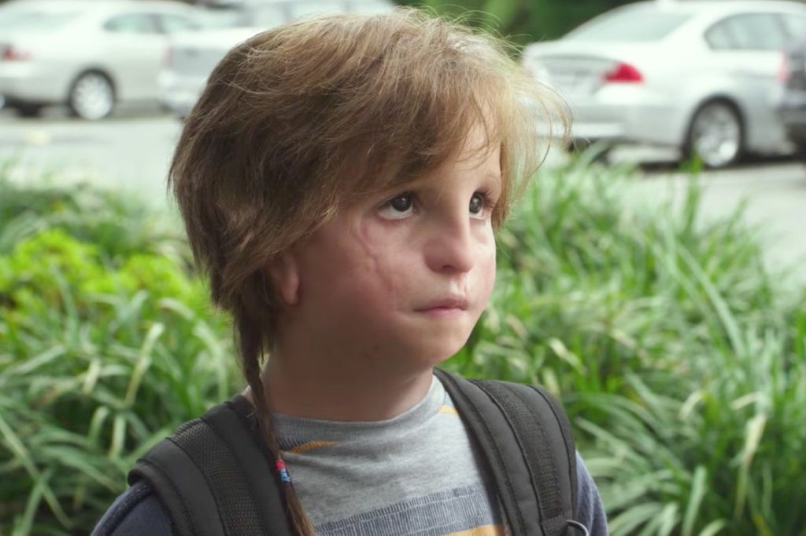
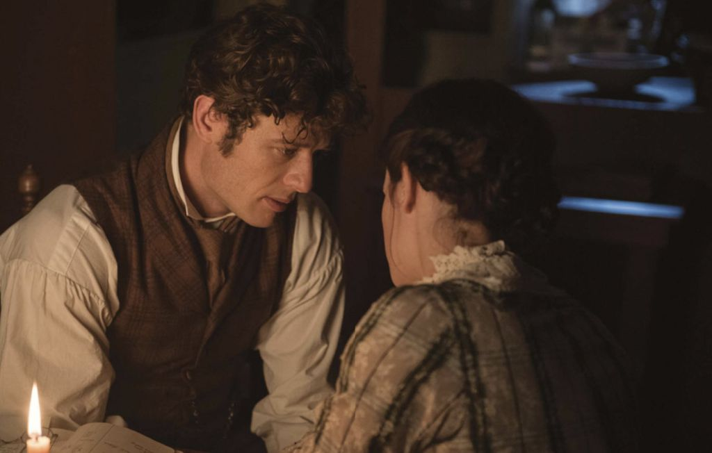
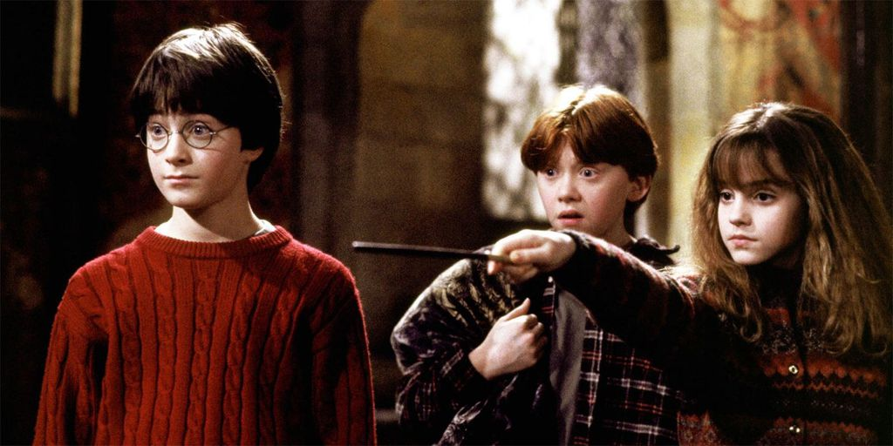

O Quarto de Jack ganhou notoriedade após ser reconhecido pela crítica especializada em 2015 e ser indicado a diversas premiações na temporada, incluindo o primeiro Oscar de Brie Larson como Melhor Atriz. O filme também chegou a consolidar a carreira do pequeno Jacob Tremblay, cuja difícil tarefa de transmitir a inocência de um garoto que passou a vida inteira crescendo com quatro paredes a sua volta foi digna dos prêmios que recebeu durante o período. O livro, Room, de Emma Donoghue, não precisou de toda a magia do cinema para entregar uma história tensa, angustiante e, acima de tudo, com muita emoção. Numa leitura de percorrer ansiosamente as páginas, a inquietação e o ato de devorar cada palavra sem fôlego foi transmitido muito bem para as telonas sob a ótica do diretor Lenny Abrahamson. O Quarto de Jack está disponível na Netflix e no Telecine Play.
Emma. (Imagem: Divulgação / Focus Features) Romances de época têm um charme único — afinal, não é à toa que não cansamos de assistir obras como Orgulho e Preconceito, de 2005. Jane Austen, um grande nome do gênero literário, assinou outras histórias icônicas além do romance entre Mr. Darcy e Elizabeth: Emma., que teve sua releitura lançada recentemente e protagonizada por Anya Taylor-Joy, é um dos exemplos que contou com uma boa adaptação. Por apenas R$ 9,90 você compra com frete grátis na Amazon e de quebra leva filmes, séries, livros e música! Teste grátis por 30 dias! Há um toque moderno na adaptação de Autumn de Wilde que torna a sátira social original de Jane Austen engraçada, atraente e nada cansativa. Muito do charme vem de Taylor-Joy, cujo olhar nervoso e curioso dá à Emma uma nova roupagem e caracterização. Emma. está disponível no Telecine Play.

(Imagem: Divulgação / Fox Searchlight Pictures) O título pode soar agressivo, mas Eu, Você e a Garota que Vai Morrer é um filme adolescente com o tom e atmosfera cativante que dificilmente vemos em obras do tipo desde John Hughes. O longa acompanha Greg, um adolescente que não se encaixa em nenhuma tribo de sua escola e atualmente leva o último ano do ensino médio da forma mais anônima possível: evitando interações sociais, almoçando com um de seus professores e fazendo em segredo alguns filmes caseiros com Earl, seu único amigo. No entanto, esse anonimato é abalado quando sua mãe o pede para interagir com Rachel, uma colega de classe que enfrenta a leucemia. A obra literária é de Jesse Andrews, que também assinou o roteiro do longa — por causa disso, os acontecimentos são tão bem encaixados, fluidos e de acordo com os eventos lidos nas páginas do livro.

(Imagem: Divulgação / Focus Features) Inspirado por suas próprias experiências, o romance de 2006 Se Enlouquecer Não Se Apaixone (It's Kind of a Funny Story, no idioma oficial) segue o adolescente Craig Gilner, que quer se matar. Após parar num hospital psiquiátrico, sua vida muda completamente pelas amizades reais e um romance feitos nos corredores cinzentos do local. O livro, escrito por Ned Vizzini, chegou a ser considerado um dos melhores títulos para jovens adultos em 2007, selecionado pela American Library Association. Assim como nas páginas, o filme passa esse tom de ternura e desilusão para as telas numa jornada introspectiva e pessoal muito profunda, mas, assim como tudo na vida, há um final feliz que pode não ser o que esperávamos, mas que sempre esteve ali.
(Imagem: Divulgação / Lionsgate) Estrelado por Jacob Tremblay (que falamos lá em cima em O Quarto de Jack), Extraordinário segue o pequeno Auggie Pullman, um garoto que nasceu com uma deformidade facial e precisou passar por 27 cirurgias plásticas durante a infância. Aos 10 anos, ele finalmente começa a frequentar uma escola regular, como qualquer outra criança, pela primeira vez. No entanto, com o rosto diferente dos demais colegas de classe, ele precisa se esforçar para conseguir se encaixar em sua nova realidade. O livro de R. J. Palacio tem narração em primeira pessoa tanto de Auggie quanto de Olivia, sua irmã, e outros personagens que rodeiam a vida do protagonista. O filme contou com outras estrelas do cinema, como Julia Roberts e Owen Wilson, e mesmo tendo algumas modificações em seu enredo, ainda conseguiu trazer a história leve e inocente para as telas, propondo uma reflexão do nível do livro. Extraordinário está disponível no Telecine Play.
(Imagem: Divulgação / Sony Pictures) Adoráveis Mulheres também se encaixa como uma obra de época nessa lista (e cujas adaptações cinematográficas agradam muito os fãs de Orgulho e Preconceito e Emma.). O livro Mulherzinhas, de Louisa May Alcott, que inspirou ambos filmes, é de inspiração autobiográfica da autora, e foi publicado em 1868. A obra acompanha a história de quatro irmãs que cresceram entre os anos 1861 e 1865, durante a Guerra Civil dos EUA. Nos cinemas, o livro contou com uma adaptação recente, em 2019, dirigida por Greta Gerwig e estrelada por nomes como Saoirse Ronan, Florence Pugh, Emma Watson entre outros nomes. Em 1996, Winona Ryder, Christian Bale, Kirsten Dunst e outras estrelas também fizeram parte do elenco da releitura da obra. Adoráveis Mulheres está disponível na Netflix (versão de 1994).

(Imagem: Divulgação / 20th Century Fox) Um dos maiores sucessos do cinema também não poderia deixar de estar presente nesta lista. Clube da Luta, que foi traduzido para as telas sob a óptica de ninguém menos que David Fincher, é hoje um dos maiores clássicos do cinema, e não é à toa: o filme ganha pela coesão do roteiro de Jim Uhls e competência da atuação de Brad Pitt, Helena Bonham Carter e Edward Norton — este que dá um show à parte na narração em primeira pessoa. Assine a Disney+ aqui e assista a títulos famosos da Marvel, Star Wars e Pixar quando e onde quiser! O longa de Fincher foi baseado no livro homônimo de Chuck Palahniuk e tem um dos plot twists mais famosos do cinema. Clube da Luta está disponível no Prime Video.

(Imagem: Divulgação / Warner Home Video) O autor de Um Estranho no Ninho, Ken Kesey, não gostou da adaptação cinematográfica de 1975 de seu romance de 1962, mas isso não torna a obra dispensável. O filme foi o segundo da história a ganhar o Oscar do que a Academia e o público popularmente chama de "Os Cinco Grandes" (Melhor Filme, Diretor, Ator, Atriz e Roteiro) e continua sendo um clássico consagrado até os dias atuais. Crítica | Um Estranho no Ninho continua atual contra um mundo estéril Ambientado em uma clínica psiquiátrica, a história segue Randall McMurphy, um indivíduo de espírito livre que termina fugindo do local e lidera os pacientes em uma rebelião contra a equipe opressivai, chefiada pela enfermeira Ratched.

(Imagem: Divulgação / New Line Cinema) Baseado na obra de J. R. R. Tolkien, O Senhor dos Anéis originou filmes que mudaram o cinema permanentemente: aclamado pela crítica e reconhecido pelo maior prêmio da indústria, Peter Jackson foi o responsável por trazer às telonas um mundo repleto de fantasia e aventura que conquistou uma legião inteira de fãs. Em uma terra fantástica e única, um hobbit recebe de presente de seu tio um anel mágico e maligno que precisa ser destruído antes que caia nas mãos erradas. Frodo tem um caminho árduo pela frente, encontrando perigo, medo e seres bizarros. Ao seu lado, para cumprir esta jornada, ele deve confiar em outros hobbits, um elfo, um anão, dois humanos e um mago, totalizando nove seres que formam a Sociedade do Anel.
(Imagem: Divulgação / Warner Bros.) A saga mais querida de todo o cinema e literatura pode ter seus defeitos ao passar o conteúdo dos livros fielmente para as telonas, mas a experiência está longe de ser dispensável por coisas pontuais. Harry Potter foi um verdadeiro fenômeno e originou oito filmes e construiu um verdadeiro império na indústria do entretenimento: além dos livros e obras cinematográficas, a saga originou diversos produtos colecionáveis, parques de diversão, peças de teatro, jogos digitais e muito, muito mais. Harry Potter acompanha o menino que dá nome à série. Órfão e vivendo com os tios, tudo muda quando Hagrid bate à sua porta e revela algo que vai mudar sua vida para sempre: ele é, na verdade, filho de dois poderosos bruxos e precisa adentrar na Escola de Magia e Bruxaria de Hogwarts, onde fará amigos incríveis, aprenderá novos feitiços, descobrirá novas criaturas e, consequentemente, enfrentará novos medos. Harry Potter está disponível no HBO Max.